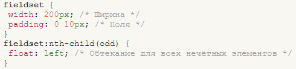

Переход между полями с помощью табуляции
При достаточно большом количестве полей формы, которые необходимо заполнить, переходить между ними с помощью курсора мыши становится неудобно. При этом требуется навести курсор на соответствующее поле, нажать кнопку мыши, и только после этого вводить нужное значение.
Как альтернатива, используется клавиша Tab, которая позволяет быстро переключать фокус с одного поля на другое. Атрибут tabindex определяет последовательность перехода между полями при нажатии на Tab.
Фокусом называется активность поля, иными словами, поле доступно для того, чтобы в него вводили информацию или использовали какое другое действие. Например, кнопки, флажки, переключатели можно активизировать с помощью пробела.
Следующие элементы формы, которые могут иметь атрибут tabindex : <button>, <input>, <select>, <textarea>. В качестве значения принимается число, которое задаёт шаг перехода. Так, номер 1 означает, что это поле первое получит фокус, номер 2 будет идти следующим и т.д.
В примере 1 показано применение tabindex когда поля формы размещаются в ячейках таблицы. Если значение tabindex не указано, то по умолчанию переход по элементам формы происходит так, как они расположены в коде HTML, т.е. сверху вниз.
Обратите внимание, что с помощью табуляции фокус вначале получает поле, где надо ввести имя, а затем поле для ввода телефона.
Пример 1. Использование tabindex
